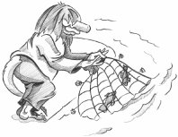

Chapter 14. Networking

Qt provides the QFtp and QHttp classes for working with FTP and HTTP. These protocols are easy to use for downloading and uploading files and, in the case of HTTP, for sending requests to web servers and retrieving the results.
Qt also provides the lower-level QTcpSocket and QUdpSocket classes, which implement the TCP and UDP transport protocols. TCP is a reliable connection-oriented protocol that operates in terms of data streams transmitted between network nodes, while UDP is an unreliable connectionless protocol based on discrete packets sent between network nodes. Both can be used to create network client and server applications. For servers, we also need the QTcpServer class to handle incoming TCP connections.
 |